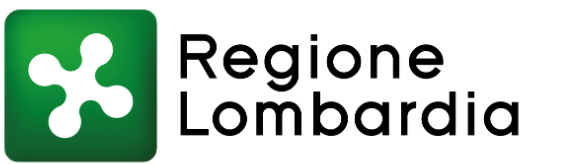
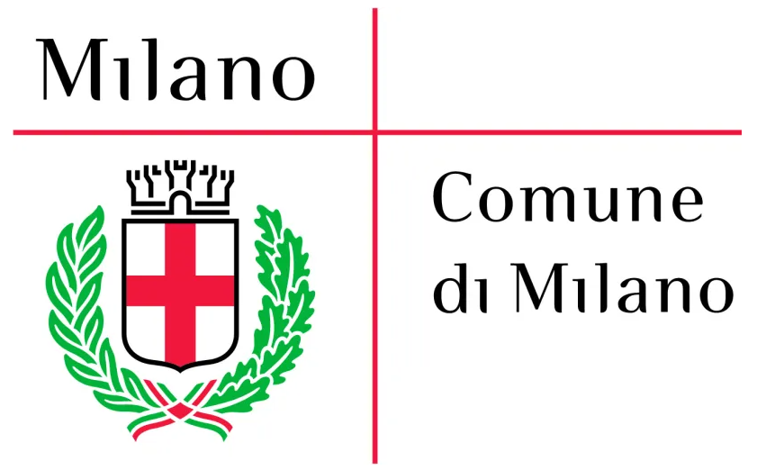
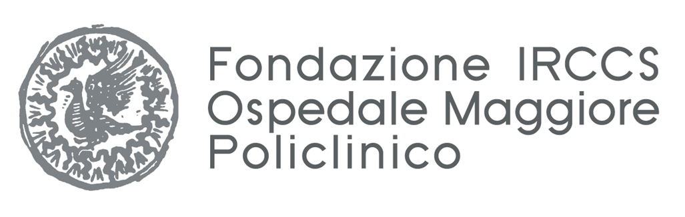

Perché CorriMilano
La corsa è un gesto minimo che produce un effetto enorme: regolarità, prevenzione, lucidità. CorriMilano nasce per promuovere movimento e consapevolezza — nel modo più concreto possibile: mettere persone in strada, in sicurezza, in una città che per qualche ora si lascia attraversare da un’idea semplice.
Vuoi viverla al tuo ritmo? Va benissimo. Vuoi spingere un po’ di più? Perfetto. Qui la misura la scegli tu.
Info rapide
- 5 km • anello nel centro storico
- Partenza/arrivo: Piazza Duomo
- Consigliati abbigliamento comodo e idratazione
- Manifestazione non competitiva
Per dettagli: regolamento e percorso.
Patrocini
Con il patrocinio e il supporto istituzionale di enti del territorio. I loghi sono riportati nei materiali dell’edizione 2025.


